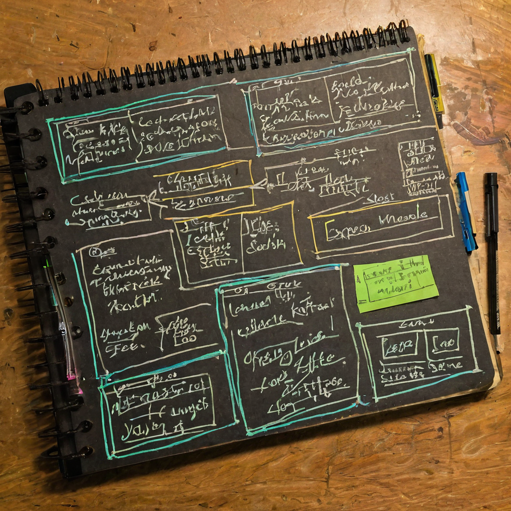

There are announcements you scroll past and ones that make you stop. Free. MIT license. A full coding agent CLI from a lab that just shipped a new model. That combination was worth a closer look.
[hero image]
@zodchiii shared news that Moonshot AI, the lab behind the Kimi model line, released Kimi Code CLI: a free, open-source command-line coding agent. The post positioned it as a Claude Code alternative, noted the MIT license, and mentioned the same lab shipped their K3 model the prior day. Two features were called out before the post text cut off: screen recording as a direct chat input, and built-in modes including coder and explore.

AI coding tools have been dominated by paid APIs and closed or mixed-license tooling. Claude Code, Cursor, and Copilot are real products with real capabilities, but they all carry real costs. A free CLI under MIT changes the access equation, and not just at the hobbyist level.
MIT means you can use it, modify it, and build on top of it commercially without license drift. That matters for small teams, open-source projects, and anyone building a workflow they need to own fully. It especially matters if the underlying model quality is serious, which Moonshot has some track record to suggest it might be.
The other shift is what it signals about who is competing in this space. When labs with real research output ship open-source developer tooling for free, the cost floor for capable coding agents compresses. That is good for builders, full stop.
[explainer image]
What it does: Kimi Code CLI is a terminal-based coding agent. You work with it through conversation to handle file editing, code generation, and task execution in a local development context.
What stands out: Screen recording as a chat input. Most CLI agents are text-in, text-out. You describe what you want or what is broken, and the agent responds. Kimi Code CLI reportedly accepts a screen recording dropped directly into the conversation. The potential use case is obvious: instead of trying to explain a visual bug or a confusing UI state in words, you show it.
Built-in modes: The post mentioned coder mode and explore mode. Coder mode is the active lane, making edits and generating code. Explore mode is the read-only lane, useful for understanding a codebase before touching anything. The post appeared to list a third mode, but that text was cut off in the shared version.
MIT license: Minimal friction to use, fork, embed, or distribute. No commercial use restrictions baked into the license. That is the kind of choice that compounds over time as an open-source tool finds community adoption.
Cost: The tool itself is listed as free. Whether any model API access behind it carries a cost is worth checking against the official repo before committing to a workflow.
Who it helps most: Individual developers who want capable agentic coding without ongoing API fees. Teams building internal developer tooling that needs to stay open and extensible. Open-source projects that need to embed or adapt a coding agent without worrying about license complications downstream.
What still needs testing: Screen recording input quality depends entirely on how well the model processes video context in practice. The demo promise and the workflow reality can diverge. Worth getting hands on before assuming it works for your specific use case.
The screen recording input is the thing I keep coming back to. It sounds like a small feature and maybe it is, but the workflow problem it addresses is real. When something breaks visually, you spend a lot of energy converting what you see into words that an agent can act on. That translation step is where precision gets lost. If you can just drop the recording in and let the model work from what you actually saw, that is a meaningful change to the interaction.
I have no idea yet how well it works. But putting it there at all suggests Moonshot is thinking about this as a tool for real developer workflows, not just a text generator with a terminal wrapper attached.
The MIT license is the other piece worth paying attention to. MIT-licensed tools in active ecosystems tend to compound in ways that are hard to predict upfront. Once builders can fork and extend without friction, the tool becomes a platform for things the original team did not plan for. That is usually where the interesting stuff comes from.
How the underlying model actually performs on complex, real-world coding tasks outside of demos. Whether the community starts building on top of the MIT codebase and what they build. How the screen recording feature holds up with messier real-world inputs, not just clean examples. And whether other labs respond with similar open tooling, because that kind of competitive pressure tends to move fast once it starts.
Source: X post by @zodchiii, https://x.com/i/web/status/2078222648539271430, retrieved 2026-07-17.
External references: No external links were included in the shared post text. The official Kimi Code CLI repository was not linked in this post and should be located independently before publishing.